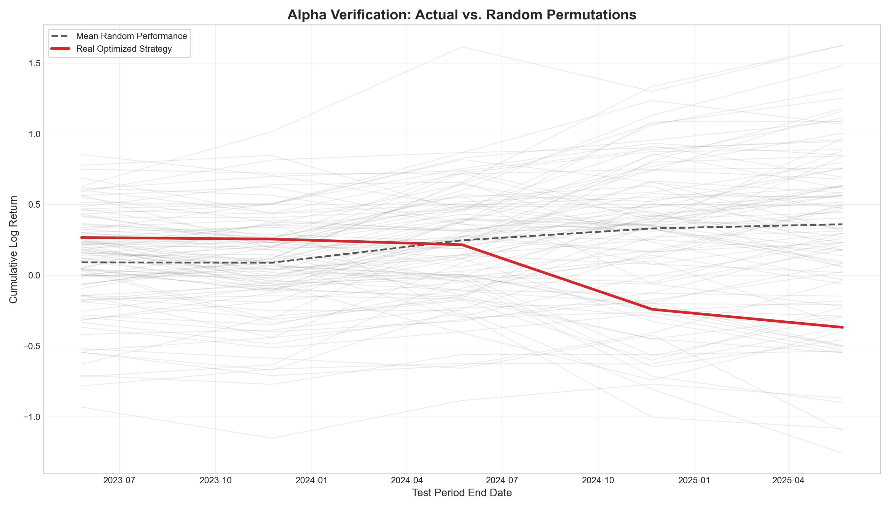
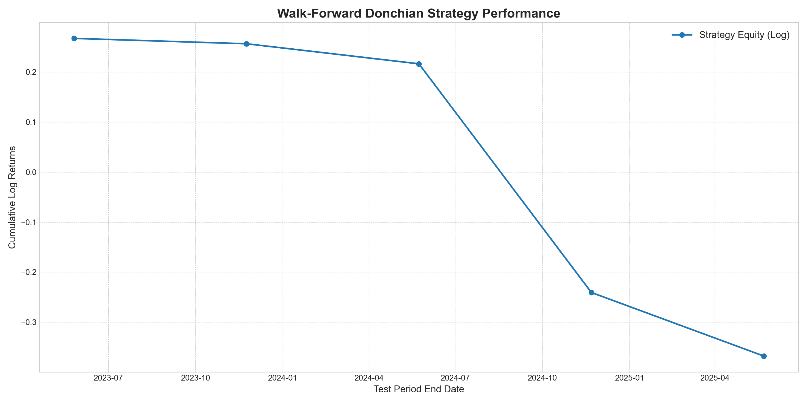
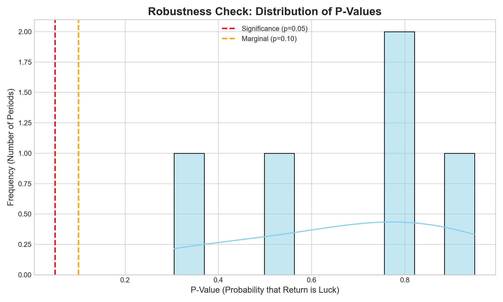

Donchian Strategy Audit: ADANIPORTS.NS
Executive Summary
Stock
Total Log Return
Annualized Return
Avg P-Value
Significant Periods (p<0.05)
MCPT Iterations
ADANIPORTS.NS
-0.3676
-14.77%
0.6682
0/5
1000
Methodology:
Walk-Forward Optimization (730 day train / 182 day test).
Validation:
Monte Carlo Permutation Test (1000 iterations per period).
1. Alpha Verification (The "Money Plot")

Red line = Your Strategy. Grey lines = Random Luck. If Red is above Grey, you have Alpha.
2. Equity Curve

Cumulative Log Returns over the entire test history.
3. Statistical Robustness

Distribution of P-Values. A left-skewed histogram (bars stacked near 0.0) indicates consistent statistical significance.